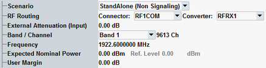

Signal Routing and Analyzer Settings
The following parameters configure the RF input path. All parameters are common measurement settings, i.e. they have the same value in all measurements (e.g. PRACH measurement and multi-evaluation measurement).
Signal routing and analyzer settings for PRACH measurements are configurable for one carrier only.
For parameter descriptions refer to the multi-evaluation measurement, "Signal Routing and Analyzer Settings".

Signal routing and analyzer settings